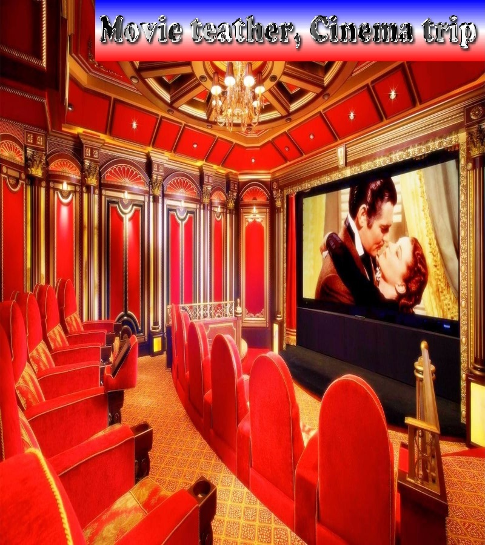

Please choose a category left

Active in Oslo and places
About
-
Quick View
Nature and city parks
Check out left menu back for choosing options. Recommended to experience and enjoy the nature for free outdoor on trips. We will post about landscape locations for great naturewalk places in all seasons of Oslo. Expertise about nice nature trips and tips. Learn about opportunities for lakes and islands to find all on menu and then scroll down below.
-
Quick View
Winter skiing
If you are a first time beginner contemplating your first ski trip in winter what should you expect? During a skiing trip or skiing holiday you can find tips as ski equipment, clothing, great preperation tips and exploration of skiing winter locations.
- Quick View
-
Quick View
Concerts and music events
Concert places, live music and street performances.
-

Quick View
Movie theater
Let's go to the movies. In the menu you can select to find overview of where movie theaters are, and where to find cinema info with schedules in the city.